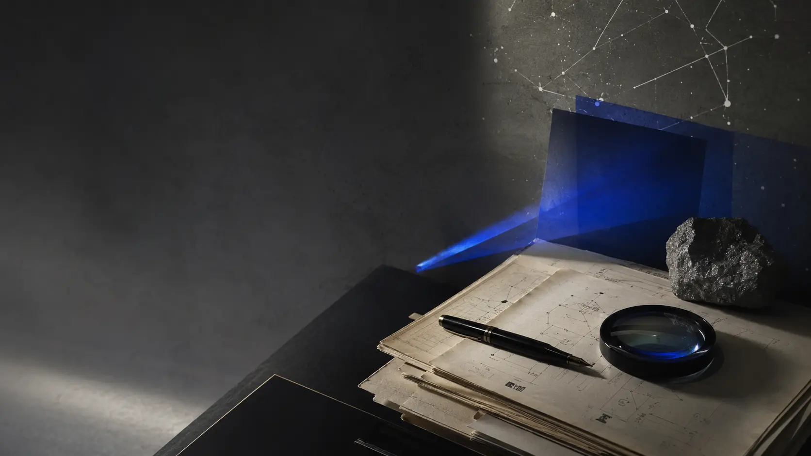

PROFESSOR · AUTHOR · CREATOR
김준호JOONHO KIM
교수 · 저자 · 창작자 · 시스템 설계자Professor · Author · Creator · System Designer
AI에게 판단을 맡기지 않고,AI와 함께 메시지의 몸을 만드는 사람.I do not hand judgment to AI.I work with AI to give messages a body.
미디어융합 전공 공학박사 김준호는 음악, 영상, 출판, 제품, 연구와 사회적 가치를 하나의 인과관계로 연결합니다.Joonho Kim, Ph.D. in media convergence, connects music, video, publishing, products, research, and social value through one causal body.
L0
미디어는 메시지의 몸이다.Media is the body of the message.
MAP
한 사람을 이루는 네 개의 관계Four relations that form one person
홈은 모든 내용을 쌓아놓는 곳이 아니라 각 관계로 들어가는 문입니다.The home page is a set of doors into distinct relationships, not a pile of every detail.
WORK
음악과 영상, 제품Music, film, and products
만드는 행위가 어떤 관계와 태도를 갖는지 보여줍니다.How acts of making embody relation and attitude.
EVIDENCE
저서와 연구Books and research
생각과 주장이 기록과 증거의 몸을 갖습니다.Ideas and claims take on bodies of record and evidence.
SHARING
미리내운동Mirinae Movement
기술과 창작이 나눔의 거리를 줄입니다.Technology and creation shorten the distance to sharing.